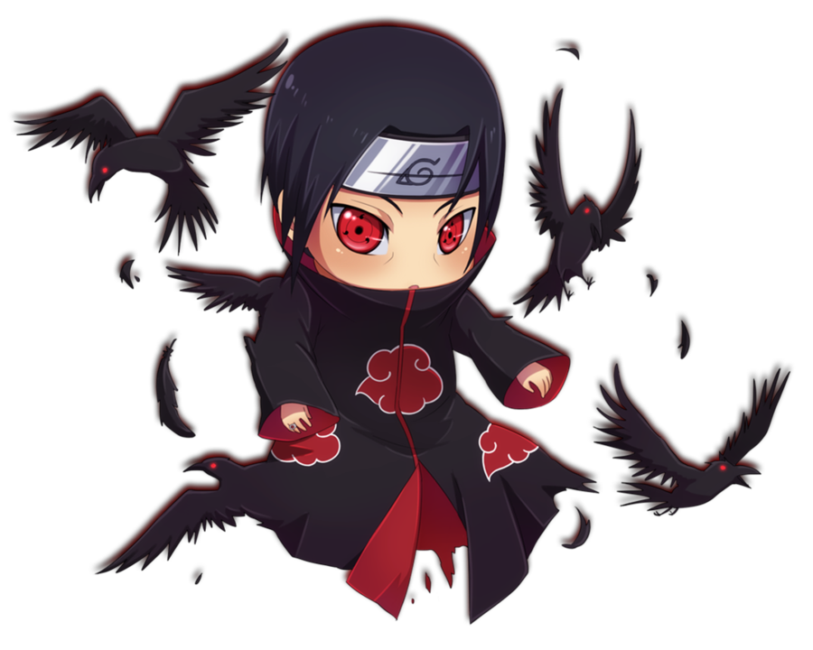

literally meaning: "Dawn" or "Daybreak"
Akatsuki was a group of shinobi that existed outside the usual system of hidden villages. Over the course of several decades, Akatsuki took different forms and was led by different individuals. Though each iteration is viewed as either subversives or criminals, all seek to make the world a better place through their own means. Each Akatsuki tended to have multiple lairs across the world, inaccessible either due to their remoteness or the various security measures that protected them.
| Name | Status | Village of Origin |
|---|---|---|
| Deidara | Employed a suicide attack while fighting Sasuke Uchiha | Iwagakure |
| Hidan | Buried by Shikamaru Nara | Yugakure |
| Itachi Uchiha | Succumbed to illness while fighting Sasuke Uchiha | Konohagakure |
| Juzo Biwa | Killed by the Fourth Mizukage | Kirigakure |
| Kakuzu | Killed by Kakashi Hatake | Takigakure |
| Kakuzu's Partner | Killed by Kakuzu | Unknown |
| Kisame Hoshigaki | Survives to next iteration | Kirigakure |
| Konan | Left organisation | Amegakure |
| Nagato | Sacrificed himself to resurrect his victims | Amegakure |
| Orochimaru | Left organisation | Konohagakure |
| Sasori | Killed by Chiyo | Sunagakure |
| Tobi | Survives to next iteration | Konohagakure |
| White Zetsu | Survives to next iteration | None |
| Black Zetsu | Survives to next iteration | None |